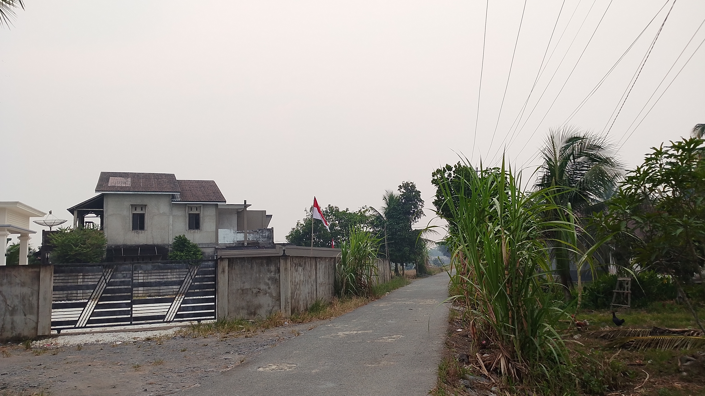

MENGENAL DESA
Kenali lebih dekat desa kami.

TENTANG KAMI
Desa Semparuk merupakan desa yang memiliki suasana lingkungan yang asri dan kehidupan masyarakat yang sederhana. Kebersamaan dan gotong royong menjadi bagian penting dalam kehidupan masyarakat desa.
Lingkungan desa yang hijau dan nyaman menjadi salah satu daya tarik Desa Semparuk.
Masyarakat hidup dengan rasa kebersamaan, saling membantu, dan menjaga hubungan baik antarwarga.
Desa memiliki berbagai potensi seperti pertanian, perkebunan, lingkungan alam, dan kegiatan masyarakat.